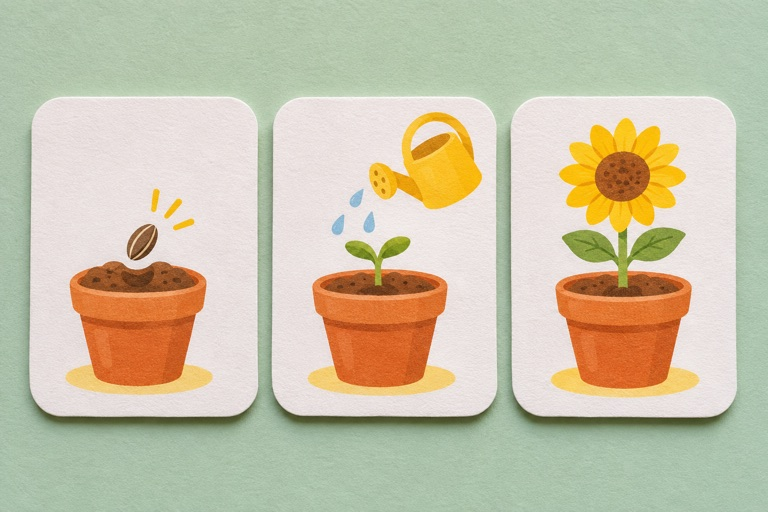

Voltar ao Conecta
Ver contato
Bia Costa
Recursos para trabalhar linguagem oral e construção de narrativas.
Sobre Bia
Bia atua com linguagem infantil em contexto clínico. Desenvolve propostas para ampliar o vocabulário, organizar ideias e recontar histórias. Em suas atividades, usa imagens e brincadeiras para apoiar a comunicação no cotidiano.
Especialidades
- Linguagem infantil
- Linguagem oral
- Habilidades narrativas
Formação e experiência
Formação
- Graduação em Fonoaudiologia
- Especialização em Linguagem
Experiência profissional
- Atendimento fonoaudiológico infantil
- Elaboração de recursos para oficinas de narrativa oral
Atendimento e contato
- Endereço de atendimento
- Avenida Exemplo, 240 · Sala 2
Bairro Modelo · Campinas, SP - Atendimento
- Presencial
- Público atendido
- Crianças em idade pré-escolar e escolar
Contato profissional
- (19) 9XXXX-XXXX
- bia.costa@example.com
Portfólio

Oficina de linguagem
Oficinas de narrativa oral
Atividades para construir e recontar histórias usando imagens, perguntas de apoio e sequências de acontecimentos.
Público Crianças em idade pré-escolar e escolar
Ver material relacionadoComo aplicar a atividade
- Apresente as imagens fora de ordem e peça que a criança descreva cada cena.
- Organizem juntos a sequência e conversem sobre o que aconteceu primeiro, depois e no final.
- Convide a criança a recontar a história com suas próprias palavras, usando as imagens como apoio.
Lojinha
R$ 19,90
Fonoaudiologia · Bia Costa
Sequências para contar histórias
Atividades para ordenar acontecimentos, descrever ações e recontar uma história.
Ver material